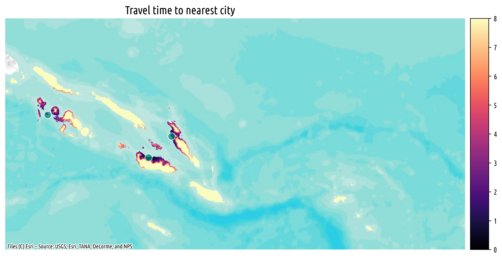
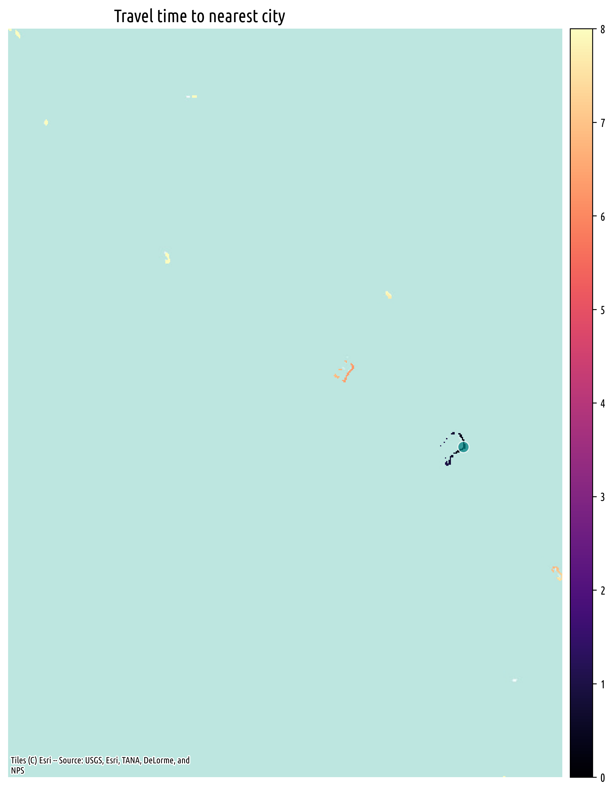

Market Access and Connectivity#
Market Access can be defined as the ability to reach “destinations” (for example, cities, ports, goods, or services). In other words, it is a measure of a population’s potential to access opportunities. In the context of the Pacific, market access is constrained by the region’s vast distances, remoteness, and the dispersion of its islands. The region is also prone to natural disasters, which can further disrupt connectivity.
This analysis uses the latest public data to build a multi-modal network to study accessibility and connectivity in the Pacific. It is split into two components: (1) measures of land-based travel time and (2) connectivity between islands through ferry routes. As a starting point to demonstrate the methodology, we calculate travel time to major cities in the Pacific and map ferry routes between islands.
Definition of Urban Clusters#
We use gridded population data from WorldPop to identify population centers in the Pacific. Following the Degree of Urbanization classification, we define urban clusters as contiguous areas with total population greater than 5,000 and population density of at least 190 inhabitants per sq. km. (originally 300, adjusted to 190 for the Pacific to capture more areas).
Friction Surface#
For land-based travel, we leverage the motorized transport friction surface developed by Weiss et al. (2020). The friction surface is a raster dataset that represents the time it takes to cross a cell in minutes. The dataset is based on roads data from OpenStreetMap and Google Maps, and incorporates additional terrain factors such as slope, land cover, and elevation. Using this data as a cost surface, we use the GOSTnetsraster toolkit to estimate the shortest travel time from every pixel to the nearest city.
Accessibility Maps#
The following maps provide a baseline measure of market access. The maps show motorized travel time to the nearest urban cluster in hours.





Interactive Maps#
Because of the large geographic distances between islands, some of the islands are not visible in the static maps. The same data is displayed below with interactive maps, allowing users to zoom in and out to explore the accessibility of different islands, as well as overlaying roads and points of interest from OpenStreetMap and a satellite imagery basemap.
Papua New Guinea#
Federated States of Micronesia#
Marshall Islands#
Nauru#
Palau#
Samoa#
Solomon Islands#
Tonga#
Tuvalu#
Vanuatu#
Fiji#
Kiribati#
Ferry Routes#
For sea-based travel, we leverage the AIS data accessed through the UN Global Platform. We query AIS signals from vessels that are classified as Passenger and have local flags in the Pacific. We then filter out signals from static vessels where speed over ground is 0. This proof of concept uses AIS passenger signals from Vanuatu for the full year of 2023.

Fig. 1 AIS Signals from passenger vessels in Vanuatu#
Trajectories#
We apply various algorithms from MovingPandas to derive ferry routes from AIS signals. First, we group the data points into collections by unique vessel identifier and consecutive timestamps. We then split these trajectories into individual trips based on a time gap of 1 hour.
Next, we simplify the trajectories by identifying clusters of points, snapping the start and end point of each route to a given cluster. This allows us to generate a network graph of all routes between islands, where each node represents a cluster of points and each edge represents a route.
{kind=link}
Fig. 2 Network graph of routes between islands in Vanuatu#
To separate single trips (or cruises) from recurring ferries, we examine the weight for each network edge. In other words, the number of times a route is present in the AIS data.
In forthcoming updates, we will expand this analysis to integrate the ferry routes with the land-based travel time analysis to provide a comprehensive view of connectivity in the Pacific.